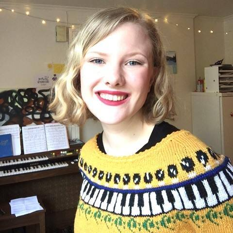

Ada studies music technology at NTNU, and is interested in making a new website for her student union, Lydmurerlosjen, where she is responsible for PR and marketing.
The goals are to promote the activities of Lydmurerlosjen, promote music technology at NTNU as a whole, and presenting past and present students and their projects.
The audience for this website will be both people looking for basic information about the union with an overview of what the union is up to with activities people can join.
This section describes upcoming events that Lydmurerlosjen will be hosting and how you can participate in these events.
This section describes what Lydmurerlosjen's purpose is, and who is part of the board, possibly with pictures of them and a description of what part of the union they are responsible for, and all of their email addresses.
This section will an interactive Google map, a telephone number, email address, links to our social media presence, and any other useful info to get in touch with the union.
Here the site will promote past and present students with links to their music/work, images from projects and things of that nature.
Lydmurerlosjen already owns the domain lydmurerlosjen.no. Our client, Ada Mathea Hoel, will be the one maintaining the page.